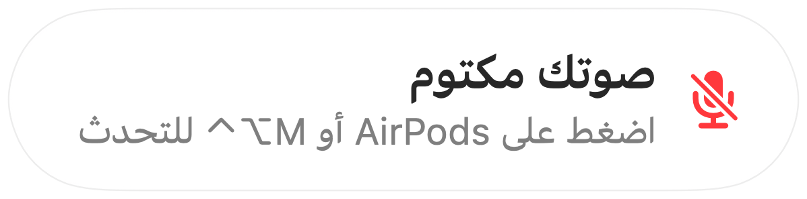

تذكير ”صوتك مكتوم“ لكل تطبيق مكالمات
يحذّرك Zoom عندما تتحدث أثناء كتم الصوت. لكن معظم التطبيقات الأخرى لا تفعل ذلك، وتكاد مكالمات الويب لا تفعله إطلاقًا. تشرح شيئًا لمدة دقيقة كاملة، ثم تلاحظ أن الجميع بانتظارك.
يرصد Muffle الحديث عندما يكون صوتك مكتومًا ويعرض تذكيرًا في أي تطبيق. وعندما تستخدم المكالمة AirPods أو سماعة رأس، يستمع إلى ميكروفون Mac المدمج نفسه، وإلى مستوى الصوت فقط. لا يُسجَّل أي شيء.
تفعيل التذكير
- 1
ثبّت Muffle واسمح بالوصول إلى الميكروفون.
- 2
تأكد من تفعيل خيار ”ذكّرني عندما أتحدث أثناء كتم الصوت“ في إعدادات Muffle.
- 3
انضم إلى مكالمة باستخدام AirPods أو سماعة رأس واكتم الصوت.
- 4
ابدأ بالحديث. سيظهر تذكير ”صوتك مكتوم“.

- هل تنضم إلى مكالمة وصوتك ما يزال مكتومًا من المكالمة السابقة؟ يذكّرك Muffle فور بدء المكالمة.
- لا تؤدي الكتابة على لوحة المفاتيح إلى تشغيل التذكير، بل الحديث المتواصل فقط.
الأسئلة الشائعة
هل يعمل التذكير مع ميكروفون Mac المدمج؟
يعمل هذا عندما تستخدم المكالمة AirPods أو سماعة رأس. إذا كانت المكالمة تستخدم ميكروفون Mac المدمج نفسه، فسيكون ذلك الميكروفون مكتومًا ولا يمكنه سماعك.
هل يتم تسجيل صوتي؟
لا. يقيس Muffle علو الصوت فقط ولا يحتفظ بأي تسجيل صوتي أو يرسله أبدًا.